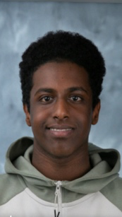
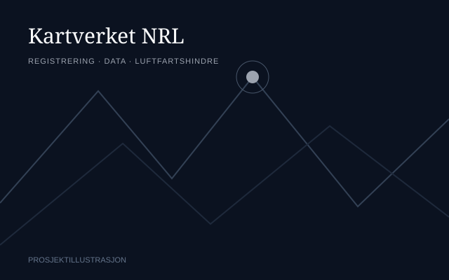
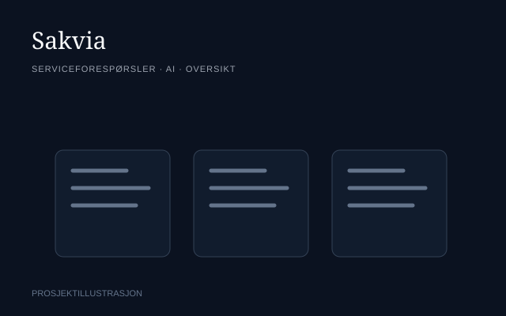
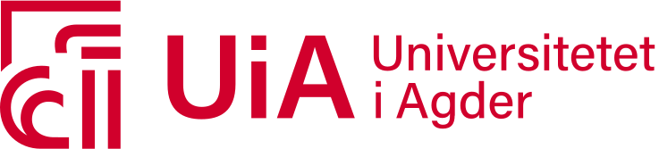
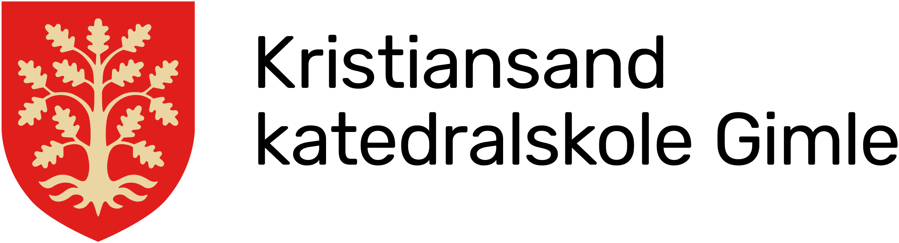

About Me
Jeg er Abokor Osman Mahamed, IT-student ved UiA med interesse for systemanalyse og utvikling. Jeg liker å forstå behov, strukturere komplekse problemer og bygge digitale løsninger som er enkle å bruke.
Projects
Kartverket NRL
En webapplikasjon for rapportering og behandling av luftfartshindre, utviklet i gruppe i samarbeid med Kartverket og Norsk Luftambulanse. Jeg bidro særlig med systemanalyse, kravarbeid, datamodellering og struktur i prosjektleveransen.
View on GitHub
Sakvia
Sammen med en medstudent utvikler jeg et system for interne serviceforespørsler. Vi arbeider med strukturert lagring, et dashboard for oppfølging og AI-støtte som skal foreslå kategori og prioritet.
View on GitHub
LuksusEiendom Studio
En tjeneste for bedre boligannonser. Jeg analyserte innhold, utviklet kvalitetsstandarder for tekst og presentasjon, og bygget nettsiden. KI ble brukt som støtte til analyse, strukturering og kvalitetssikring.
View on GitHubTechnical Skills
Praktisk erfaring fra studier og prosjekter innen analyse, utvikling og digitale systemer.
Web Development
Backend Development
System Analysis
Database & Data
Tools & Workflow
Other Skills
Education
Min utdanningsbakgrunn, fra studiespesialisering til IT og informasjonssystemer.

Bachelor i IT og informasjonssystemer
Universitetet i Agder
IT og informasjonssystemer
2024 – 2027 · Pågående
Fordypning i systemanalyse, systemutvikling, programmering, databaser og digitalisering.
Årsstudium i sosiologi
Universitetet i Agder
Sosiologi
August 2022 – juni 2023
Studier i sosiologi.

Studiespesialisering
Kristiansand Katedralskole Gimle
SSØ – Språk, samfunnsfag og økonomi
August 2019 – juni 2022
Språk, samfunnsfag og økonomi.
Experience
Arbeidserfaring og verv som har gitt meg ansvar, samarbeidsevne og forståelse for mennesker.
Pizzabakeren Rona
Pizzabaker
2022 – nå
Kundebehandling, produksjon og daglig drift i et miljø med høyt tempo. Fokus på kvalitet, samarbeid og selvstendig ansvar.
Verneombud
Arbeidsmiljø og HMS
2025 – nå
Bindeledd mellom ansatte og ledelse i saker om arbeidsmiljø og HMS.
Tillitsvalgt
Representant for ansatte
2024 – 2025
Representerte ansatte i saker knyttet til arbeidsmiljø, samarbeid og rettigheter.